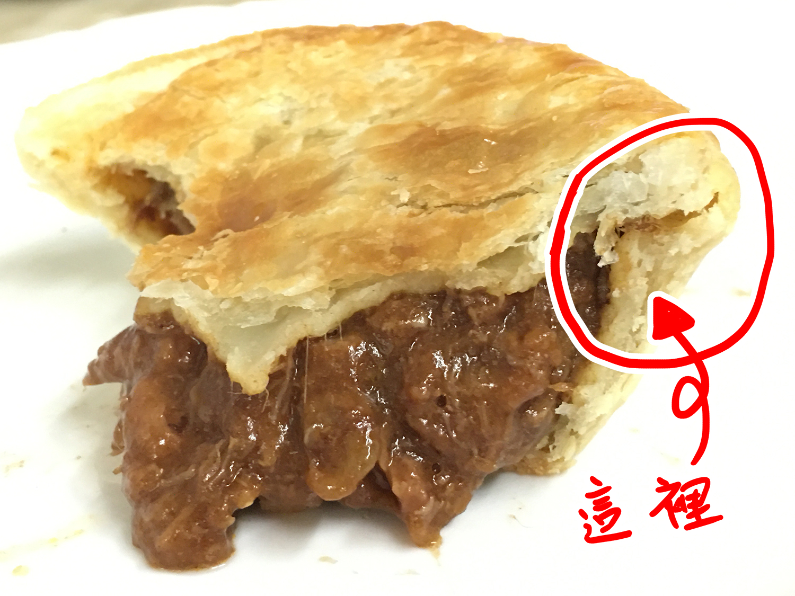

FOUR'N TWENTY
自詡為"派控"的本K就是特別愛吃派，得知COSTCO有賣牛肉派&剛好需要寫食記主題的網頁就決定買一盒回來吃吃看。

裡面是一包一包裝的，全部共6片。外盒開封處有做一些設計，拆開的開口處能夠反扣回去，平時放置時不用擔心裡面的牛肉派一個一個滑出去。
外盒也有保存跟調理說明。
外盒介紹結束！香噴噴的牛肉派出場！
烤完出來香氣四溢，內餡使用的是澳洲安格斯牛肉，本來以為內餡是固態的牛肉塊在裡面，可能因為是燉煮的關係，有塊狀牛肉塊外也含有肉汁，讓口感不至於太乾，塊狀牛肉咬起來也是鬆軟，吃起來比較滑順。
我個人很喜歡派皮的部分，派皮酥脆外蛋奶香也很足夠，但吃起來不會油膩，反而是清爽的感覺。尤其特別喜歡派皮側邊的部分。

這部分的派皮較為厚實，酥脆＋香濃蛋奶香，個人覺得咬起來有點像在吃餅乾的感覺。
這邊有個小插曲，其實在第一次吃時是用咬的，可能是因為裡面的蒸氣關係，牛肉餡會從咬下的缺口處流出來，但因為一些因素所以沒拍到照片。第二次真正要拍時，為了拍攝美觀改用切的，大概是切口太大少了內部壓力，內餡就很老實地處在原地就是不流出來，遺憾拍不到內餡流出來的效果(邊拍攝邊在內心對牛肉餡吶喊"拜託不要那麼乖！")
然後，吃著吃著剛好就出現了類似內餡流出來的畫面，雖然咬的痕跡很難看但還是讓你們看看！
就像這樣啦！！！！！(死腔ver)
Thanks for watching :D